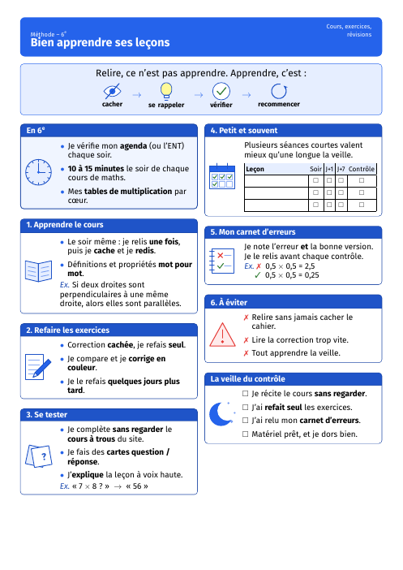

Méthode : bien apprendre ses leçons en 6èmeLa fiche de ton année, à imprimer et à garder dans le cahier.
Fiche 6ème (PDF, 1 page) La méthode en détail →
Contrôle commun · professeur (0)Déplier / replier
Visible seulement par le professeur connecté. Fichiers chiffrés : même mot de passe que la page admin.
Aucun contrôle commun pour le moment.
Progression 2026-2027
01Nombres entiers
02Droites et cercles
03Nombres décimaux
04Angles
05Comparer, additionner et soustraire des nombres décimaux
06Construction de triangles et propriétés
07Multiplier des nombres décimauxProblèmes
08Raisonner avec des droites et des médiatrices
09Division euclidienne
10Propriétés des angles
11Organisation de données
12Division décimale
13Périmètres
14Fractions
15Proportionnalité
16Aires
17Addition et soustraction de fractionsProportion
18Symétrie axiale et axe de symétrie d'une figure
19Se repérer dans le temps
20Solides et volumes
21Probabilités